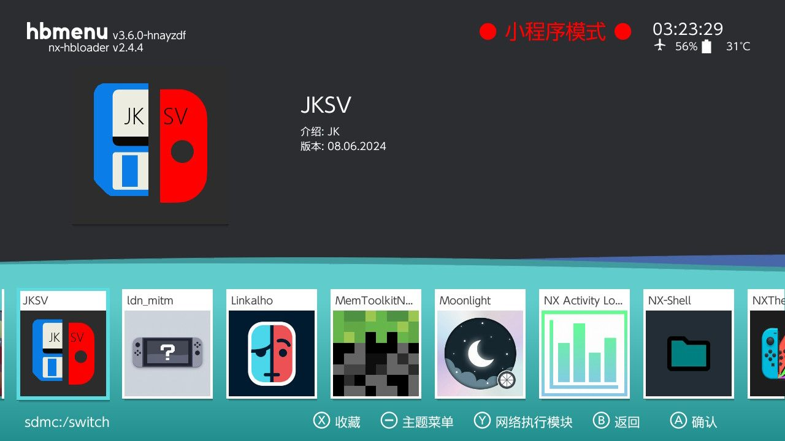
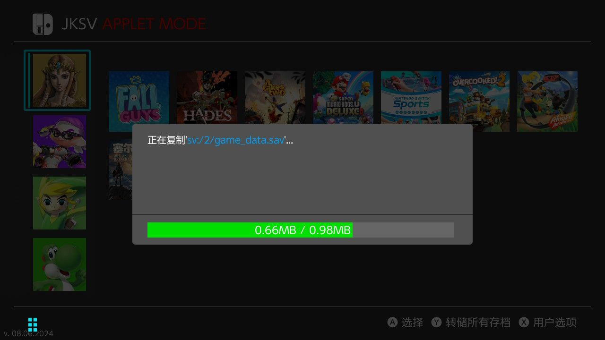
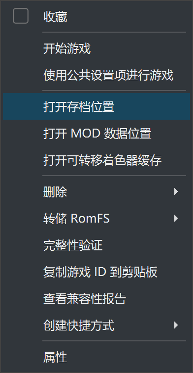
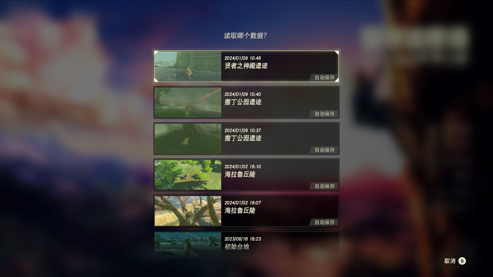
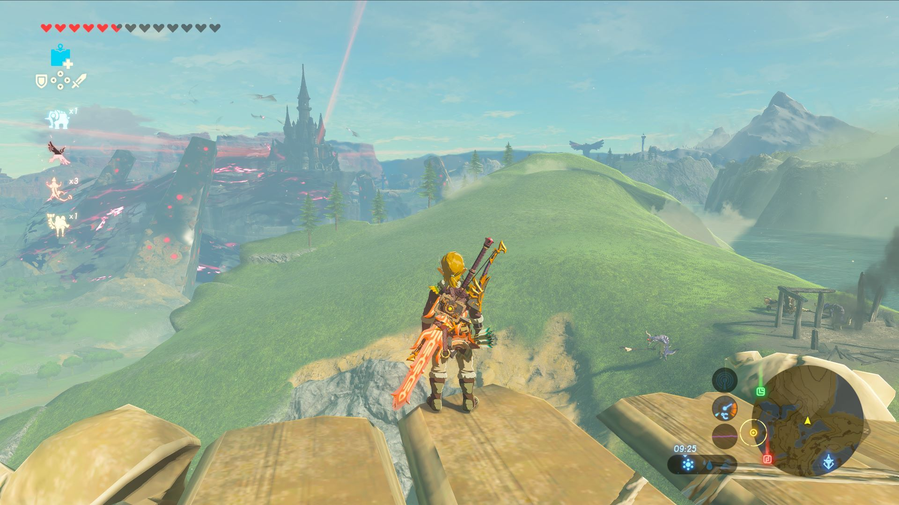

目录
这一切的基础是 Switch 已破解。
- JKSV 导出存档
- 导入到 Yuzu 模拟器
JKSV 使用
JKSV Switch 开源存档导出工具 https://github.com/J-D-K/JKSV 下载完毕后，把 JKSV.nro文件拷贝到 TF 卡中的以下目录：
/switch/JKSV/JKSV.nro

重启系统后，进入相册页面，找到 JKSV 并进入
按住 Y，进行存档备份

备份完毕后的数据路径/switch/JKSV/游戏名/用户名
Yuzu 存档导入
找到对应的游戏，点击打开存档位置

把之前备份的存档拷贝过去，结束。破解 Switch 的唯一理由就是把存档导出来，有好多地方值得留恋。

